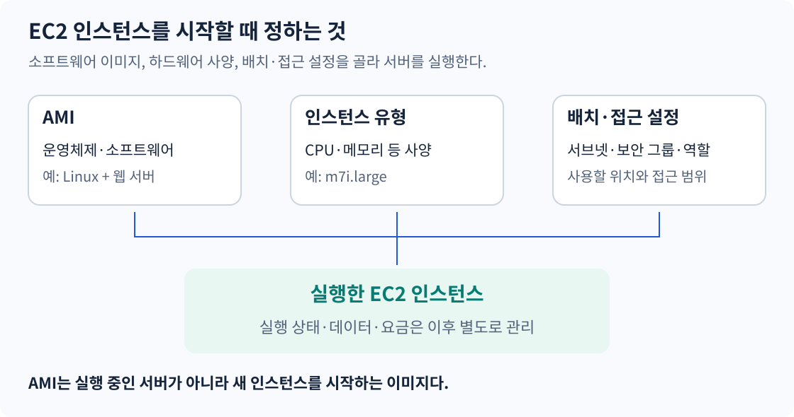
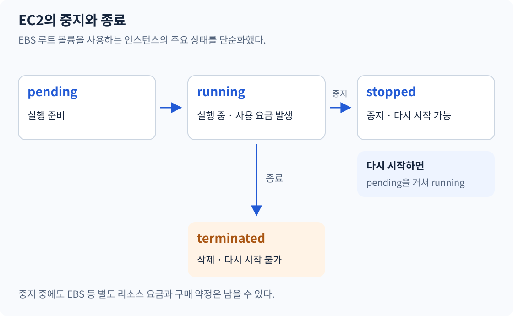
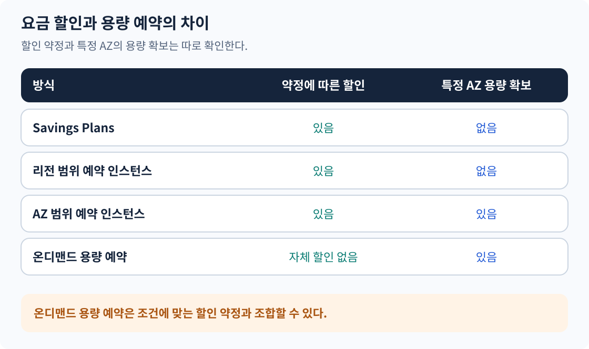
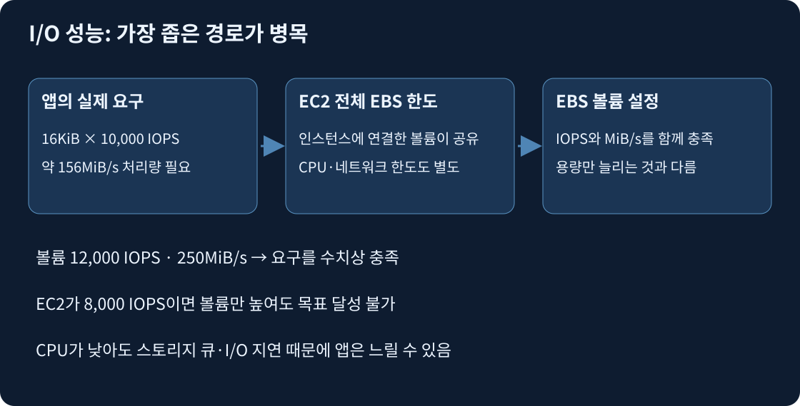
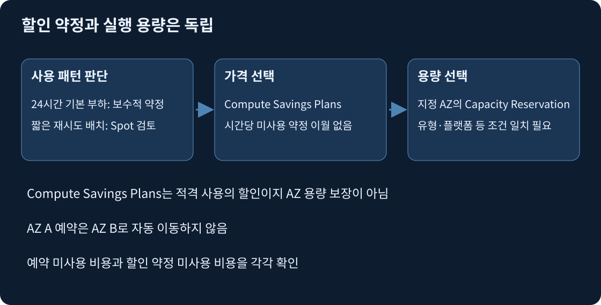

| 시간 | 내용 |
|---|---|
| 0~15분 | EC2·AMI·인스턴스 유형 |
| 15~30분 | 재부팅·중지·최대 절전·종료 |
| 30~45분 | 온디맨드와 Spot |
| 45~60분 | 예약 인스턴스와 Savings Plans |
| 60~75분 | 용량 예약·전용 호스트, 구매 옵션 비교 |
| 75~90분 | 서비스 사용 예와 복습 |
Amazon EC2는 AWS에서 서버를 실행하는 서비스다. 실행한 서버 한 대를 인스턴스라고 부른다. 고객은 운영체제와 애플리케이션을 관리하고 서버 사양, 저장소, 네트워크와 권한을 설정한다.
| 항목 | 정하는 내용 | 예 |
|---|---|---|
| AMI | 부팅에 사용할 운영체제와 소프트웨어 이미지 | Amazon Linux와 필요한 프로그램 |
| 인스턴스 유형 | CPU·메모리·네트워크 등 하드웨어 사양 | m7i.large |
| 저장소 | 운영체제와 데이터가 저장될 볼륨 | EBS 루트 볼륨 |
| 서브넷 | 인스턴스를 배치할 네트워크와 AZ | 선택한 AZ의 서브넷 |
| 보안 그룹 | 허용할 네트워크 트래픽 | 웹 접속에 필요한 포트 |
| IAM 역할 | 앱이 AWS API를 호출할 때 사용할 권한 | 특정 S3 객체 읽기 |

보안 그룹은 네트워크 통신을, IAM 역할은 AWS API 접근 권한을 관리한다. 웹 접속이 허용돼도 앱의 S3 읽기 권한이 생기는 것은 아니다.
AMI는 인스턴스를 시작하는 데 필요한 이미지다. 같은 AMI로 여러 인스턴스를 실행해도 각 서버의 실행 상태는 서로 독립적이다. AMI를 만들었다고 실행 중인 서버의 RAM까지 보존되는 것은 아니다.
AMI와 인스턴스의 CPU 아키텍처도 호환되어야 한다. x86_64 이미지와 Arm64 이미지를 구분한다. AMI는 리전별 리소스이므로 다른 리전에서 사용하려면 복사 등의 절차가 필요하다.
| 분류 | 대표 계열 | 적합한 작업 |
|---|---|---|
| 범용 | M | CPU와 메모리를 균형 있게 쓰는 웹·앱 서버 |
| 버스트 가능한 범용 | T | 평균 CPU 사용이 낮고 일시적으로 부하가 생기는 작업 |
| 컴퓨팅 최적화 | C | 계산량이 많은 배치·인코딩 |
| 메모리 최적화 | R·X | 큰 데이터를 메모리에 올리는 분석·DB 작업 |
| 스토리지 최적화 | I·D | 로컬 저장소의 처리량·입출력이 중요한 작업 |
| 가속 컴퓨팅 | G·P 등 | GPU가 필요한 그래픽·머신러닝 작업 |
m7i.large에서 m7i는 패밀리, large는 크기다. 크기를 바꾸는 것과 CPU·메모리 비율이 다른 계열로 바꾸는 것은 구분한다. T 계열은 CPU 크레딧 동작을 고려해야 하므로 지속적인 고부하에 무조건 저렴하다고 판단하지 않는다.
출처: EC2 인스턴스 유형, 버스트 인스턴스와 CPU 크레딧
T 계열에서 CPU 사용이 기준보다 낮으면 크레딧이 쌓이고 높으면 소비된다. Standard 모드는 누적 크레딧이 소진되면 기준 성능으로 제한된다. Unlimited는 조건에 따라 추가 크레딧 비용이 발생할 수 있다. 잠깐 치솟는 개발 서버와 하루 종일 계산하는 인코딩 서버를 같은 기준으로 선택하지 않는다.
AMI의 CPU 아키텍처와 가상화 방식도 인스턴스에 맞아야 한다. x86과 Arm은 명령어 아키텍처의 차이이고, HVM과 과거 PV는 가상화 방식의 차이다. OS·드라이버·인스턴스 지원이 맞는 이미지를 선택한다.
| 배치 전략 | 요구사항과 제약 |
|---|---|
| Cluster | 한 AZ 안에서 가까이 배치해 노드 간 낮은 지연을 추구. AZ 장애 분산과는 다른 목적 |
| Spread | 적은 수의 중요 인스턴스를 서로 다른 기반 하드웨어에 분산 |
| Partition | 파티션 간 기반 하드웨어를 분리. Kafka·분산 DB처럼 복제 그룹이 있는 작업에서 검토 |
CPU만 늘려도 해결되지 않는 병목이 있다. 앱이 EBS IOPS 한도에 걸렸는지, 네트워크 대역폭이 부족한지, 메모리 부족으로 스왑하는지 지표를 먼저 확인한다. 수평 확장과 상태 분리는 6일 차와 연결된다.

pending은 실행 준비, running은 실행 중, stopped는 중지, terminated는 종료된 상태다. 재부팅은 OS를 다시 시작하는 작업이며 인스턴스는 running 상태를 유지한다.
최대 절전(Hibernate)은 RAM 내용을 EBS 루트 볼륨에 저장하고 멈춘다. 지원되는 인스턴스와 OS 등 조건을 충족해야 한다. 일반 중지는 RAM을 보존하지 않는다.
| 작업 | 다시 사용할 때 | RAM | 인스턴스 사용 요금 |
|---|---|---|---|
| 재부팅(Reboot) | 같은 인스턴스에서 OS 재시작 | 보존 안 됨 | 계속 발생 |
| 중지 후 시작(Stop/Start) | 같은 인스턴스 ID로 시작 | 보존 안 됨 | stopped 상태에서는 발생 안 함 |
| 최대 절전 후 시작 | RAM을 복원해 시작 | EBS에 저장·복원 | stopped 상태에서는 발생 안 함 |
| 종료(Terminate) | 해당 인스턴스 다시 시작 불가 | 보존 안 됨 | 인스턴스 종료 시 중단 |
최대 절전은 RAM을 저장하는 stopping 동안에도 인스턴스 사용 요금이 발생한다. 중지·종료 후에도 EBS 등 별도 리소스 요금과 이미 구매한 할인 약정은 남을 수 있다.
출처: EC2 상태와 과금
EBS 루트 볼륨을 사용하는 인스턴스는 중지 후 시작할 수 있다. 중지해도 EBS 데이터는 남으며 저장 요금은 계속 발생한다. 보통 다른 물리 호스트에서 다시 시작한다.
자동 할당된 퍼블릭 IPv4 주소는 일반적으로 바뀌고, 프라이빗 IPv4 주소는 유지된다. Elastic IP처럼 별도로 연결한 주소는 구분한다. 중지는 서버와 연결된 모든 리소스를 삭제하는 작업이 아니다.
출처: EC2 중지와 시작
종료한 인스턴스는 다시 시작할 수 없다. EBS 볼륨은 DeleteOnTermination 설정에 따라 삭제되거나 남는다. 기본적으로 루트 볼륨은 삭제되고 추가 데이터 볼륨은 유지되지만 실제 설정을 확인해야 한다. 남아 있는 볼륨을 이용해 새 인스턴스를 구성하는 것과 종료된 인스턴스를 되살리는 것은 다르다.
인스턴스 스토어는 호스트에 연결된 임시 저장소다. 재부팅 때는 데이터가 유지되지만 중지·최대 절전·종료 때는 사라진다. 장기 보관할 데이터는 EBS나 S3 등에 저장한다. 저장소의 상세 비교는 3일 차 자료의 주제다.
출처: 인스턴스 스토어 데이터 유지
장기 약정 없이 실행한 인스턴스 사용량에 따라 지불한다. 짧은 개발·테스트, 사용량 예측이 어려운 서비스, 일시적인 추가 용량에 적합하다.
온디맨드는 Spot의 유휴 용량 회수에 따른 중단 대상은 아니지만 하드웨어 장애까지 방지하지는 않는다. 새 인스턴스를 시작할 용량도 무조건 보장하지 않는다.
출처: EC2 구매 옵션, Spot과 온디맨드 비교
AWS의 남는 EC2 용량을 온디맨드보다 할인된 가격으로 사용한다. 필요한 용량이 없어지면 AWS가 인스턴스를 중지·종료·최대 절전 처리할 수 있다. 용량이 없으면 시작을 기다릴 수도 있다.
이미지 1만 장을 변환한다고 가정하자. 한 장씩 처리 결과를 S3에 저장하고 미완료 작업만 다시 실행한다면, 서버가 중단되어도 전체 작업을 처음부터 반복할 필요가 없다. 이런 구조에서는 Spot을 검토할 수 있다. 반대로 중단 시 복구할 수 없는 작업을 RAM에만 쌓는 구조는 맞지 않는다.
배치 작업이라는 이름만으로 Spot을 선택하지 않는다. 중단 후 재시도 가능 여부, 완료 기한, 대체 용량을 함께 확인한다. Savings Plans 할인은 Spot에 추가 적용되지 않는다.
출처: Spot 인스턴스
중지·종료에는 보통 2분 전 알림이 제공되지만, 알림은 최선 노력 방식이므로 전달을 보장하지 않는다. 최대 절전은 절차가 즉시 시작되어 2분의 여유가 없다. 알림을 받은 뒤에만 저장하는 방식보다 작업 중간에도 결과를 보존하는 설계가 필요하다.
출처: Spot 중단 알림
예약 인스턴스는 별도의 서버가 아니라 조건에 맞는 EC2 사용량에 적용되는 요금 할인이다. 1년 또는 3년을 약정하며 인스턴스 구성과 일치하는 사용량이 있어야 혜택을 받는다. 서버를 중지하거나 종료해도 약정 의무가 없어지지는 않는다.
| 구분 | 차이 |
|---|---|
| Standard RI | Convertible보다 할인 폭이 크지만 다른 구성의 RI로 교환 불가 |
| Convertible RI | 조건에 따라 다른 구성의 Convertible RI로 교환 가능 |
변경 가능한 범위는 유형과 조건에 따라 다르다. “RI를 샀으니 어떤 인스턴스에나 할인된다”거나 “약정 기간 동안 사양을 전혀 바꿀 수 없다”로 외우지 않는다.
출처: 예약 인스턴스 개요, Standard·Convertible 비교
1년 또는 3년 동안 시간당 일정 금액의 사용량을 약정해 할인받는다. 특정 서버 한 대를 사두는 방식이 아니다. 약정 금액은 온디맨드 가격이 아닌 Savings Plans 요율에 따른 사용 금액을 기준으로 계산한다.
예를 들어 시간당 1달러를 약정했다면, 해당 시간에 적용되는 사용량이 없어도 약정 금액은 지불한다. 남은 약정량을 다음 시간으로 이월하지 않는다. 적용 가능한 사용량이 약정 범위를 넘으면 초과분에는 온디맨드 요금이 적용된다.
출처: Savings Plans 개요, 시간당 약정과 할인 적용
| EC2 관련 유형 | 적용 범위 | 변경 유연성 |
|---|---|---|
| Compute Savings Plans | EC2, Fargate, Lambda의 적용 대상 사용량 | EC2 패밀리·크기·리전·OS 등이 달라져도 적용 가능 |
| EC2 Instance Savings Plans | 선택한 리전의 특정 EC2 패밀리 | 같은 패밀리·리전 안에서 크기·OS 등 변경 가능 |
Savings Plans에는 다른 서비스용 유형도 있지만, 이 표는 EC2 선택에 필요한 두 유형을 비교한다. EC2 Instance Savings Plans를 선택해 놓고 다른 리전이나 패밀리로 옮기면 해당 사용량에 할인되지 않는다.
출처: Savings Plans 유형
할인 상품을 구매하는 것과 특정 AZ에서 인스턴스를 실행할 용량을 확보하는 것은 별개다.

리전 범위 RI는 해당 리전의 조건에 맞는 사용량을 할인하지만 실행 용량은 확보하지 않는다. AZ 범위 RI는 지정한 AZ에서 조건에 맞는 용량 예약도 제공한다. Savings Plans 자체에는 용량 예약 기능이 없다.
출처: 리전·AZ 범위 RI, 용량 예약과 할인 비교
특정 AZ에서 필요한 EC2 실행 용량을 예약한다. 용량 예약 자체가 할인 상품은 아니며 미사용 예약 용량도 과금된다. 적용 조건에 맞는 리전 RI 또는 Savings Plans와 조합해 할인받을 수 있다.
특정 시점에 용량이 꼭 필요한 시스템이라면 할인율뿐 아니라 용량 확보 조건도 확인한다. 약정 기간과 비용은 실제로 선택한 예약 유형의 조건을 따른다.
출처: 온디맨드 용량 예약
Dedicated Hosts는 전용 물리 서버와 인스턴스 배치에 대한 가시성·제어를 제공한다. 소켓·코어 기반 소프트웨어 라이선스를 가져오는 요구가 있으면 검토한다. 라이선스 사용 가능 여부는 제품별 계약 조건을 따른다.
Dedicated Instances도 전용 하드웨어에서 실행하지만 Dedicated Hosts와 같은 호스트 배치 제어를 제공하지 않는다. 전용 하드웨어 요구와 단순 비용 절감 요구를 구분한다.
출처: Dedicated Hosts
AMI는 OS와 소프트웨어를 담은 실행 이미지이고 인스턴스 유형은 CPU·메모리·네트워크·EBS 성능의 조합이다. HVM은 가상화 방식, x86_64·arm64는 CPU 아키텍처이므로 서로 같은 구분이 아니다. Arm 인스턴스가 싸고 빨라도 현재 상용 모듈이 x86만 지원한다면 바로 대체할 수 없다. c·m·r 계열 이름만 보고 확정하지 말고 같은 입력의 처리 시간·작업당 비용과 호환성을 비교한다.

T 계열의 CPU 크레딧은 baseline보다 높은 짧은 부하를 위한 적립량이다. Standard에서 잔액이 소진되면 baseline으로 제한되고 Unlimited는 지속 부하에서 추가 크레딧 요금이 발생할 수 있다. 하루 종일 CPU가 높다면 일반 지속 성능 계열의 실측 성능·총비용과 비교한다. 디스크가 느린 것은 별개다. 16KiB I/O를 초당 10,000회 요구하면 약 156MiB/s이므로 IOPS와 처리량을 모두 충족해야 한다. 볼륨만 높여도 인스턴스 전체 EBS 한도를 넘을 수 없다.
중지는 RAM을 보존하지 않지만 EBS를 유지한다. 최대 절전은 지원되는 구성에서 RAM을 암호화된 EBS에 저장해 재개하며, 종료는 인스턴스를 없애고 EBS는 DeleteOnTermination에 따라 삭제한다. 인스턴스 스토어는 중지·최대 절전·종료 때 사라진다. 중지 중에도 EBS·스냅샷·공인 IPv4·약정 요금은 남는다. 자동 공인 IPv4는 시작 후 바뀔 수 있으므로 외부 허용 목록의 고정 주소가 필요하면 EIP와 그 비용을 검토한다.

기본 사용량이 매시간 발생하고 리전·패밀리 또는 Fargate·Lambda로 바뀔 계획이면 Compute Savings Plans가 할인 후보다. 시간당 약정의 미사용 금액은 다음 시간으로 이월되지 않는다. 하루 두 시간 피크까지 24시간 약정하지 말고 지속 소비량부터 산정한다. RI 중 Regional은 적격 Linux/UNIX·기본 테넌시의 같은 패밀리 안에서 크기 유연성을 제공한다. large 4대와 xlarge 2대는 같은 정규화 사용량이며 리전 안의 AZ도 바꿀 수 있지만 용량 예약은 제공하지 않는다.
지정 AZ의 실행 용량이 필요하면 일치 조건의 On-Demand Capacity Reservation을 따로 확보한다. AZ를 옮겨도 예약은 따라오지 않는다. 새 AZ의 예약·실행을 확인한 뒤 옛 유휴 예약을 정리한다. 중단 후 재실행 가능한 짧은 배치는 Spot과 여러 유형·AZ 용량 풀을 사용하고 체크포인트를 외부 저장한다. Capacity Rebalancing도 중단을 없애는 보장은 아니다. 긴급 작업은 큐를 나눠 온디맨드 등으로 보호한다.
성능 측정 사례, 시간당 약정 계산, RI 정규화·HostId·host affinity, Cluster 배치와 IMDSv2의 정확한 조건은 EC2 성능·수명·구매 심화에서 이어진다.
출처: EC2 수명 주기, Savings Plans, 용량 예약.
| 사용 조건 | 검토할 방식 | 이유 |
|---|---|---|
| 며칠 동안 테스트하고 폐기, 사용량 미정 | 온디맨드 | 장기 약정 부담 없음 |
| 중단 후 재실행 가능한 이미지 변환, 기한 유연 | Spot | 중단을 처리하면서 비용 절감 |
| 1년 이상 일정한 EC2 구성을 지속 사용 | RI 또는 EC2 Instance Savings Plans | 사용 구성과 약정의 일치 여부 비교 |
| EC2 패밀리·리전이나 Fargate·Lambda로의 변경 예상 | Compute Savings Plans | 적용 범위가 더 유연함 |
| 특정 AZ에서 반드시 실행할 용량 필요 | 용량 예약 또는 조건에 맞는 AZ RI | 실행 용량 확보 |
| 소켓·코어 기반 라이선스와 호스트 배치 제어 필요 | Dedicated Hosts | 전용 호스트 요구에 대응 |
항상 사용하는 기본 용량에는 조건에 맞는 RI나 Savings Plans를 적용하고, 일시적인 추가 용량은 온디맨드 또는 중단 가능한 Spot으로 구성할 수 있다. 하나의 서비스에 구매 방식을 하나만 쓸 필요는 없다.
오랫동안 사용할 계획이어도 사용량이 불확실하면 큰 약정을 먼저 사지 않는다. 꾸준히 소비할 수 있는 범위와 사양 변경 가능성을 확인한다.
출처: 구매 옵션, Savings Plans 유형
자료를 덮고 다음 차이를 직접 설명해본다.
공식 자료 확인일: 2026-11-02